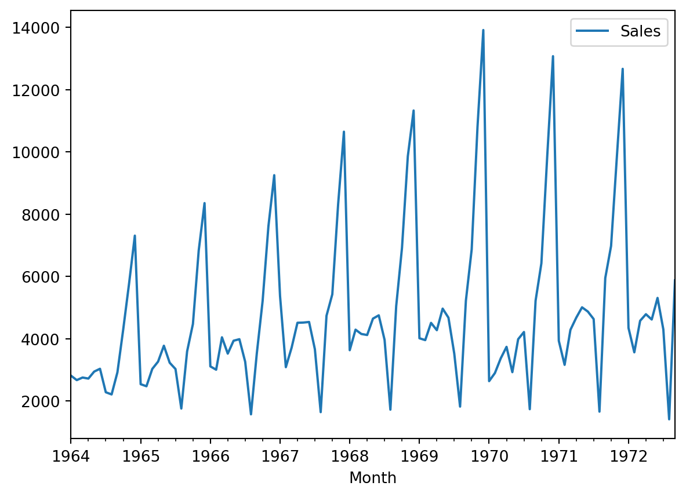

Now looking at the data, we see that it’s a monthly sales data. So we set the month as our index, instead of the regular index.
df.set_index('Month', inplace=True)df.head()
Sales
Month
1964-01-01
2815.0
1964-02-01
2672.0
1964-03-01
2755.0
1964-04-01
2721.0
1964-05-01
2946.0
Visualize the data
df.plot()

From the plot we see that there is some seasonality in the data which needs to be taken care off. Let’s first check the stationarity of the data. Stationarity means the statistical properites such as mean, variance remains the same over the time for a time series data. We define the null and alternative hypothesis like this
\(H_0\): The data is not stationary
\(H_1\): The data is stationary
from statsmodels.tsa.stattools import adfullerdef adfuler_test(sales): adf_test = adfuller(sales) labels = ['ADF Test Statistic','p-value', 'Number of observation used']for value,label inzip(adf_test, labels):print(label+' : '+str(value))if adf_test[1] <=0.05:print("Strong Evidence against the null hypothesis (H0), so reject the null hypothesis")else:print("There is not enough evidence against the null hypothesis, so we accept the alternative")adfuler_test(df['Sales'])
ADF Test Statistic : -1.8335930563276166
p-value : 0.36391577166024813
Number of observation used : 11
There is not enough evidence against the null hypothesis, so we accept the alternative
---title: "Time Series Forecasting of Future Sales Using ARIMA and SARIMA"author: "Rafiq Islam"date: 2024-11-08search: trueformat: html: default ipynb: default---# Library and Packages ```{python}import numpy as npimport pandas as pdimport matplotlib.pyplot as plt```# Load the data ```{python}df = pd.read_csv('data/Perrin Freres monthly champagne sales millions.csv')df.head()``````{python}df.tail()```## Data Cleaning and Preprocessing ```{python}df.columns = ['Month', 'Sales']df = df.drop(df.index[-2:])df.tail()``````{python}df.info()```Since the column, month is a string object, so we need to convert it into date and time format in order to apply time series models ```{python}df['Month'] = pd.to_datetime(df['Month'])df.head()```Now looking at the data, we see that it's a monthly sales data. So we set the month as our index, instead of the regular index. ```{python}df.set_index('Month', inplace=True)df.head()```## Visualize the data ```{python}df.plot()```From the plot we see that there is some seasonality in the data which needs to be taken care off. Let's first check the stationarity of the data. Stationarity means the statistical properites such as mean, variance remains the same over the time for a time series data. We define the null and alternative hypothesis like this - $H_0$: The data is not stationary - $H_1$: The data is stationary```{python}from statsmodels.tsa.stattools import adfullerdef adfuler_test(sales): adf_test = adfuller(sales) labels = ['ADF Test Statistic','p-value', 'Number of observation used']for value,label inzip(adf_test, labels):print(label+' : '+str(value))if adf_test[1] <=0.05:print("Strong Evidence against the null hypothesis (H0), so reject the null hypothesis")else:print("There is not enough evidence against the null hypothesis, so we accept the alternative")adfuler_test(df['Sales'])```